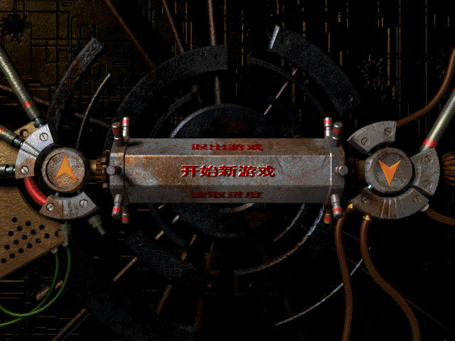
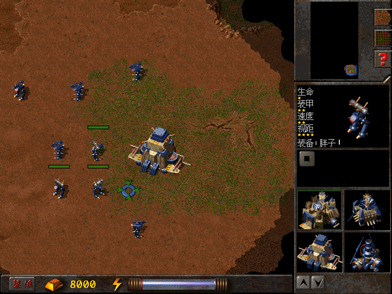

名稱：鐵甲風暴 (Metal Knight，繁中／簡中版)
簡介：目標軟件1998年出品的即時戰略遊戲，同年推出「黑色戰線（Dark Front）」加強版，
台灣由光譜代理繁中版 [待補]。


保護：光碟
備註：簡中版主程式有1998/5/14與1999/3/12兩種光碟，後者為新版。
備註：簡中版加強版有1998/8/15與1999/5/14兩種光碟，其內容均相同。
備註：啟動遊戲到主畫面出現、以及實際進入遊戲時，都會有一段較長的黑屏等待時間，需
要耐心等候。